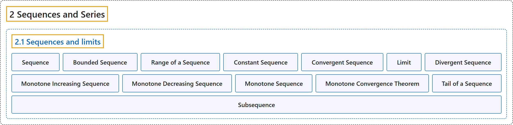

2.1 Sequences and limits
Classification

Glossary
| Term | Definition | 中文翻译 | Source |
|---|---|---|---|
| 2.1 Sequences and limits 序列与极限 |
(No definition) | （无定义） | Lebl, 2026, section 2.1 |
| Sequence 序列 |
"A sequence (of real numbers) is a function \(x \colon \mathbb{N} \to \mathbb{R}\)." | （实数）序列是一个函数 \(x \colon \mathbb{N} \to \mathbb{R}\)。 | Lebl, 2026, Definition 2.1.1 |
| Bounded Sequence 有界序列 |
"A sequence \(\{ x_n \}_{n=1}^\infty\) is bounded if the underlying function is bounded." | 若其所对应的函数有界，则序列 \(\{ x_n \}_{n=1}^\infty\) 是有界的。 | Lebl, 2026, Definition 2.1.1 |
| Range of a Sequence 序列的值域 |
"For example, the sequence \(\bigl\{ {(-1)}^n \bigr\}_{n=1}^\infty\) is the sequence \(-1,1,-1,1,-1,1,\ldots\), whereas the set of values, the range of the sequence, is just the set \(\{ -1, 1 \}\)." | 例如，序列 \(\bigl\{ {(-1)}^n \bigr\}_{n=1}^\infty\) 是 \(-1,1,-1,1,-1,1,\ldots\)，而它的取值构成的集合，即序列的值域，只是集合 \(\{ -1, 1 \}\)。 | Lebl, 2026, section 2.1 |
| Constant Sequence 常数序列 |
"Another example of a sequence is the constant sequence. That is a sequence \(\{ c \}_{n=1}^\infty = c,c,c,c,\ldots\) consisting of a single constant \(c \in \mathbb{R}\) repeating indefinitely." | 序列的另一个例子是常数序列，即由单个常数 \(c \in \mathbb{R}\) 无限重复构成的序列 \(\{ c \}_{n=1}^\infty = c,c,c,c,\ldots\)。 | Lebl, 2026, section 2.1 |
| Convergent Sequence 收敛序列 |
"A sequence \(\{ x_n \}_{n=1}^\infty\) is said to converge to a number \(x \in \mathbb{R}\) if for every \(\epsilon > 0\), there exists an \(M \in \mathbb{N}\) such that \(\lvert x_n - x \rvert < \epsilon\) for all \(n \geq M\)." | 若对每个 \(\epsilon > 0\)，存在 \(M \in \mathbb{N}\)，使得对所有 \(n \geq M\) 有 \(\lvert x_n - x \rvert < \epsilon\)，则称序列 \(\{ x_n \}_{n=1}^\infty\) 收敛到数 \(x \in \mathbb{R}\)。 | Lebl, 2026, Definition 2.1.2 |
| Limit 极限 |
"The number \(x\) is called a limit of the sequence." | 数 \(x\) 称为该序列的极限。 | Lebl, 2026, Definition 2.1.2 |
| Divergent Sequence 发散序列 |
"A sequence that converges is said to be convergent. Otherwise, we say the sequence diverges or that it is divergent." | 收敛的序列称为收敛序列。否则，就说该序列发散，或称它是发散的。 | Lebl, 2026, Definition 2.1.2 |
| Monotone Increasing Sequence 单调递增序列 |
"A sequence \(\{ x_n \}_{n=1}^\infty\) is monotone increasing if \(x_n \leq x_{n+1}\) for all \(n \in \mathbb{N}\)." | 若对所有 \(n \in \mathbb{N}\) 有 \(x_n \leq x_{n+1}\)，则序列 \(\{ x_n \}_{n=1}^\infty\) 是单调递增的。 | Lebl, 2026, Definition 2.1.9 |
| Monotone Decreasing Sequence 单调递减序列 |
"A sequence \(\{ x_n \}_{n=1}^\infty\) is monotone decreasing if \(x_n \geq x_{n+1}\) for all \(n \in \mathbb{N}\)." | 若对所有 \(n \in \mathbb{N}\) 有 \(x_n \geq x_{n+1}\)，则序列 \(\{ x_n \}_{n=1}^\infty\) 是单调递减的。 | Lebl, 2026, Definition 2.1.9 |
| Monotone Sequence 单调序列 |
"If a sequence is either monotone increasing or monotone decreasing, we can simply say the sequence is monotone." | 若序列单调递增或单调递减，就可以简单地说该序列是单调的。 | Lebl, 2026, Definition 2.1.9 |
| Monotone Convergence Theorem 单调收敛定理 |
"A monotone sequence \(\{ x_n \}_{n=1}^\infty\) is bounded if and only if it is convergent." | 单调序列 \(\{ x_n \}_{n=1}^\infty\) 有界当且仅当它收敛。 | Lebl, 2026, Theorem 2.1.10 |
| Tail of a Sequence 序列的尾 |
"For a sequence \(\{ x_n \}_{n=1}^\infty\), the \(K\)-tail (where \(K \in \mathbb{N}\)), or just the tail, of \(\{ x_n \}_{n=1}^\infty\) is the sequence starting at \(K+1\), usually written as \(\{ x_{n+K} \}_{n=1}^\infty \qquad \text{or} \qquad \{ x_n \}_{n=K+1}^\infty .\)" | 对序列 \(\{ x_n \}_{n=1}^\infty\)，它的 \(K\) 尾（\(K \in \mathbb{N}\)），或简称尾，是从第 \(K+1\) 项开始的序列，通常写作 \(\{ x_{n+K} \}_{n=1}^\infty \qquad \text{or} \qquad \{ x_n \}_{n=K+1}^\infty .\) | Lebl, 2026, Definition 2.1.14 |
| Subsequence 子序列 |
"Let \(\{ x_n \}_{n=1}^\infty\) be a sequence. Let \(\{ n_i \}_{i=1}^\infty\) be a strictly increasing sequence of natural numbers, that is, \(n_i < n_{i+1}\) for all \(i \in \mathbb{N}\) (in other words \(n_1 < n_2 < n_3 < \cdots\)). The sequence \(\{ x_{n_i} \}_{i=1}^\infty\) is called a subsequence of \(\{ x_n \}_{n=1}^\infty\)." | 设 \(\{ x_n \}_{n=1}^\infty\) 是序列，\(\{ n_i \}_{i=1}^\infty\) 是严格递增的自然数序列，即对所有 \(i \in \mathbb{N}\) 有 \(n_i < n_{i+1}\)（换言之 \(n_1 < n_2 < n_3 < \cdots\)）。序列 \(\{ x_{n_i} \}_{i=1}^\infty\) 称为 \(\{ x_n \}_{n=1}^\infty\) 的子序列。 | Lebl, 2026, Definition 2.1.16 |
References
Lebl, J. (2026). Basic analysis I & II: Introduction to real analysis (May 22, 2026 edition). Retrieved October 29, 2026, from https://www.jirka.org/ra/html/